SentinelMonitorIA
Guion de video · 5 minutos

Evaluación AWS · Código Facilito
La demostración debe probar que SentinelMonitorIA recibe señales, las procesa de forma asíncrona, genera una alerta explicable y permite consultarla mediante un chat estructurado.
/health devuelve HTTP 200./api/v1/telemetry/health está healthy.Presentar el sistema como un flujo operativo real y persistente, no como una pantalla aislada: fuente controlada, ingesta autenticada, reglas de análisis, alerta visible y consulta conversacional.
“Hola. En este video presentaré SentinelMonitorIA, una plataforma de observabilidad y AIOps orientada a detectar señales operativas, analizarlas y generar alertas de forma controlada.
La demostración utiliza datos sintéticos, una cuenta demo y una fuente de telemetry controlada. No se utilizan datos reales ni se ejecutan acciones automáticas sobre la infraestructura.”
“El frontend React está publicado en un S3 Website y se comunica con un Application Load Balancer. El ALB dirige las solicitudes al backend FastAPI desplegado en ECS.
El backend utiliza PostgreSQL para persistencia y Redis Streams para procesar los eventos de forma asíncrona. Sobre esta base funcionan el worker de telemetry, el worker de análisis y el sistema de alertas.”
“La cuenta utilizada es una cuenta de aplicación independiente de AWS. La autenticación se realiza mediante JWT y la información está aislada dentro de su organización.
La API key del agente sintético es independiente del token de sesión y sólo permite escribir telemetry. Por seguridad, no mostraremos el secreto en pantalla.”
Acción: abrir Ask Sentinel y escribir:
¿Cuántas alertas abiertas hay?
Después escribir:
Resume las alertas críticas.
Mostrar el footer: Lex V2 · es_419 · flujo estructurado · lectura segura.
“El asistente conversacional utiliza Amazon Lex V2 para interpretar las solicitudes del usuario. Lex identifica intenciones como consultar alertas abiertas, revisar telemetry, consultar alertas críticas o pedir ayuda.
En este proyecto Lex V2 se utiliza sin Bedrock y sin embeddings. Lex realiza el reconocimiento de intención y el flujo conversacional; la respuesta operativa se produce mediante reglas determinísticas del backend.”
Acción: mostrar la instancia test-redes o una diapositiva con su estado, sin mostrar credenciales.
t3.micro con Amazon Linux 2023.sentinel-mvp-demo-producer.service.ec2-test-redes-synthetic.“El productor sintético se ejecuta en la instancia EC2 existente, sin abrir puertos adicionales y con límites de CPU y memoria. Cada 30 a 60 segundos envía telemetry normal y cada 5 a 10 minutos genera un incidente controlado.
Los valores altos son datos sintéticos del payload; no generan carga real sobre la EC2. Cada batch lleva UUID y tags de trazabilidad.”
Acción: actualizar la vista de alertas y abrir una alerta reciente.
Señalar: severidad high, regla metric.cpu.high, Agent ID, evidencia del análisis y analysis_id.
“El incidente sintético contiene CPU de 96%, memoria de 94%, un log con nivel error y un evento con severidad high.
El backend recibe el batch con HTTP 202 y lo procesa de forma asíncrona. El worker de telemetry persiste los datos y los envía al análisis. El detector identifica que CPU y memoria superan el umbral del 90%; el resultado se almacena como AIAnalysis y después se crea una alerta high.”
Acción: mostrar el estado de servicios y colas.
backend: 1/1 telemetry worker: 1/1 AI worker: 1/1 notification worker: 0/0 notifications queue: 0
“El backend, telemetry worker y AI worker están activos. El notification worker permanece apagado intencionalmente. Así demostramos la generación de alertas sin enviar correos, Slack, Discord, Teams ni webhooks externos.
Las acciones automáticas también están deshabilitadas mediante AI_ENABLE_ACTIONS=false.”
Acción: mostrar la vista de controles o el dashboard, no la consola con secretos.
“La demostración reutiliza una EC2 que ya estaba encendida, por lo que no fue necesario crear un servicio ECS adicional para el productor. El agente se ejecuta con un usuario no root, límites de CPU y memoria, archivo de credenciales protegido y sin puertos de entrada nuevos.
RDS y Redis mantienen su infraestructura sin cambios. Sólo se persisten los datos sintéticos necesarios para demostrar el flujo del MVP.”
Acción: volver al dashboard con una alerta visible y el footer Lex V2.
“En resumen, SentinelMonitorIA recibe telemetry, la procesa de forma asíncrona, detecta anomalías, genera análisis y presenta alertas en el dashboard.
Lex V2 proporciona el flujo conversacional estructurado sin Bedrock ni embeddings, mientras que el productor sintético mantiene una demostración continua, controlada y reproducible.
El resultado es un MVP funcional que puede observarse en vivo sin activar notificaciones externas ni ejecutar acciones sobre la infraestructura.”
Ctrl+F5.localStorage.removeItem("sentinelmonitoria.session");
location.reload();
analysis_id mencionados.Identidad visual utilizada para la evaluación AWS y Código Facilito, seguida de la captura general de acceso al frontend de SentinelMonitorIA.


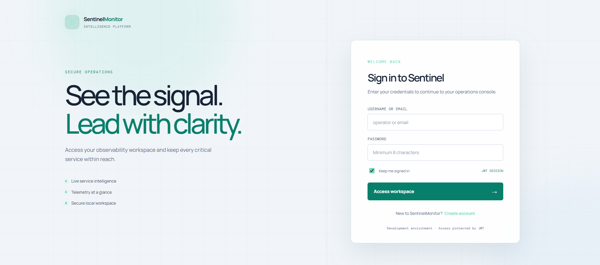
Capturas entregadas en docs/jury/Capturas. Pueden utilizarse como respaldo si la demostración en vivo necesita una vista preparada.
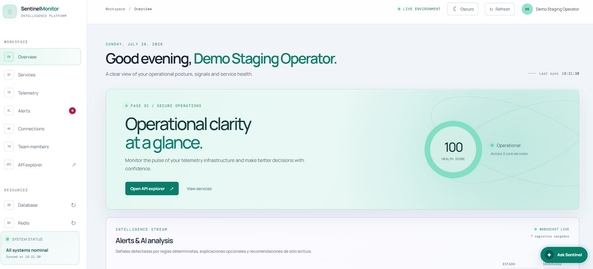
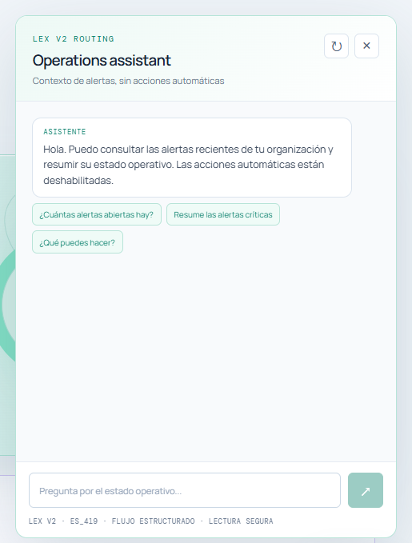
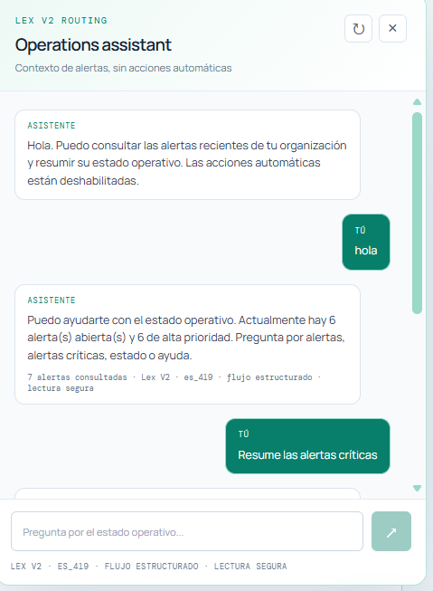
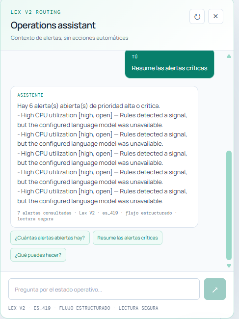
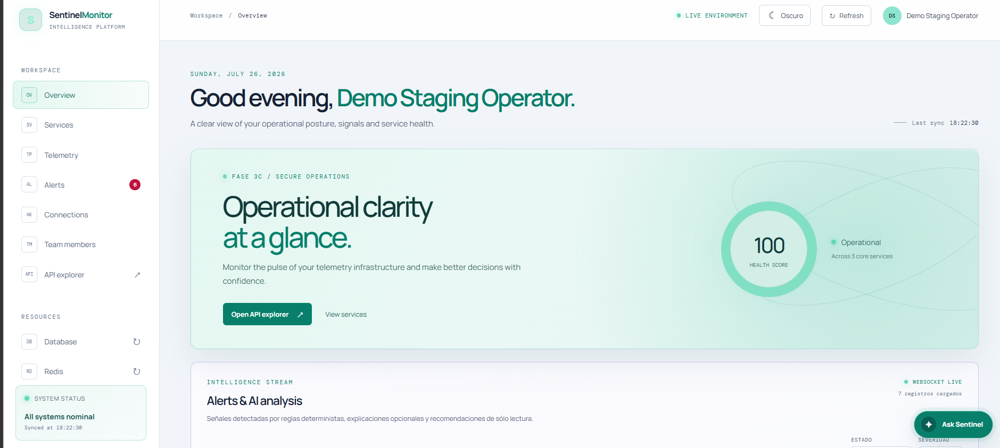
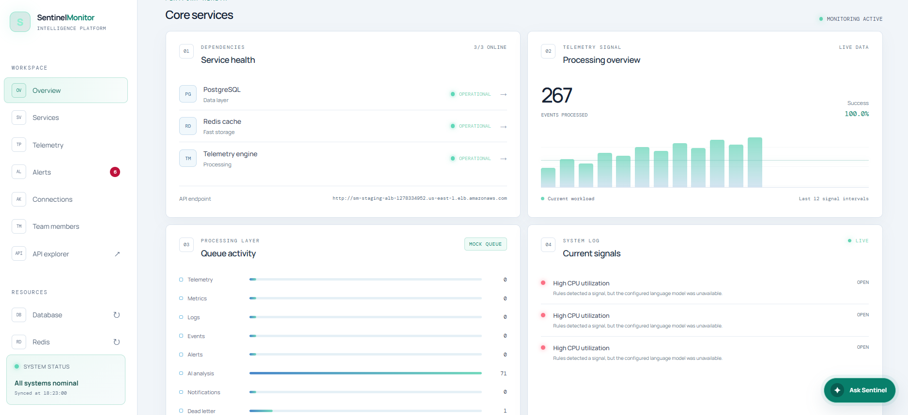
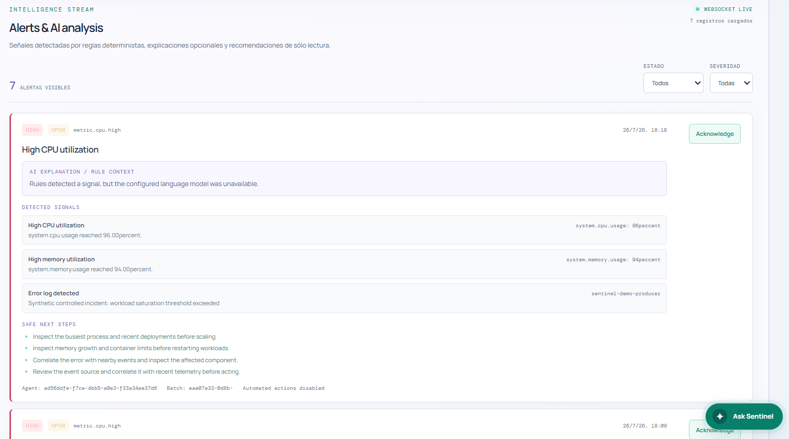
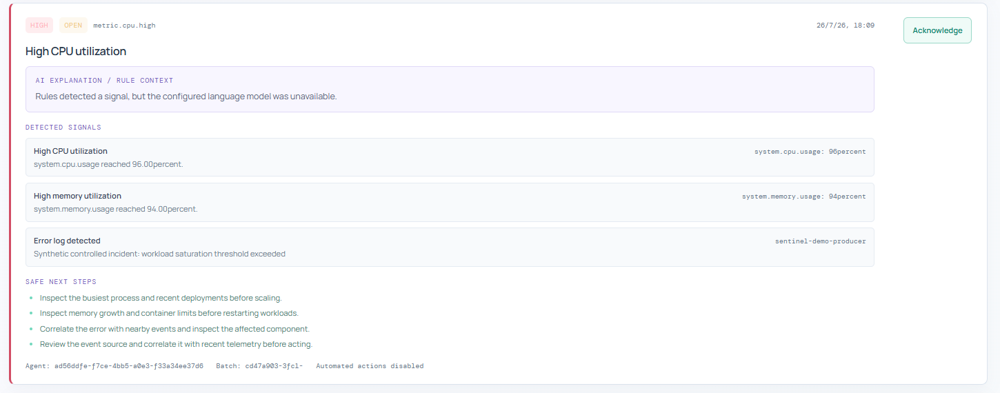
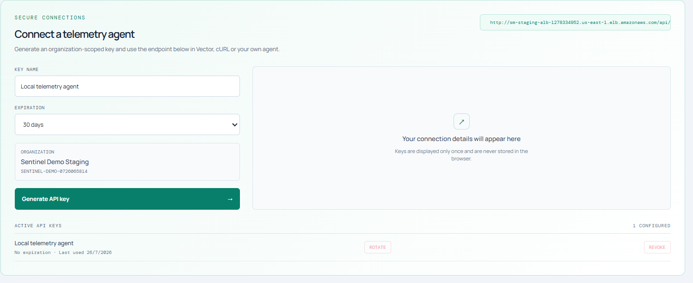
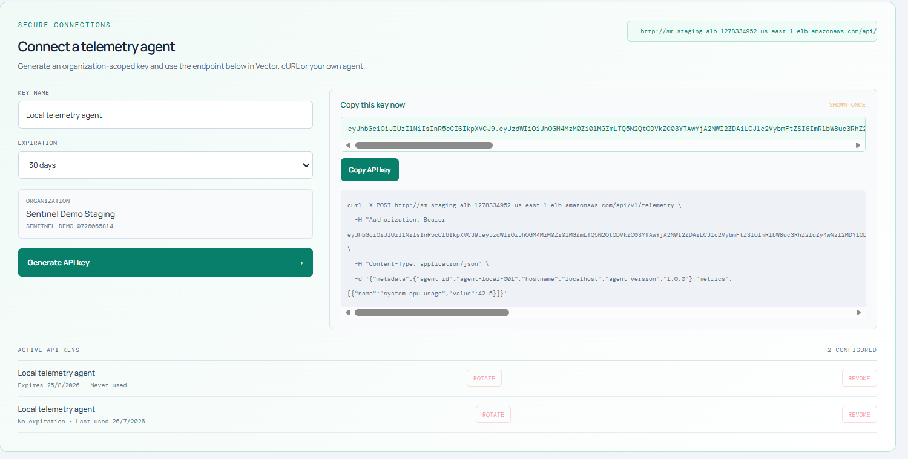
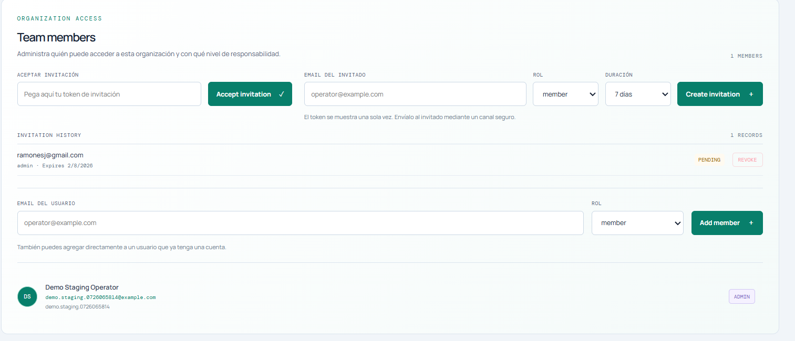
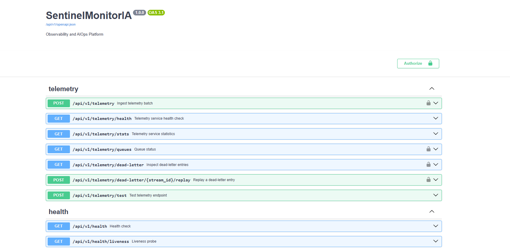
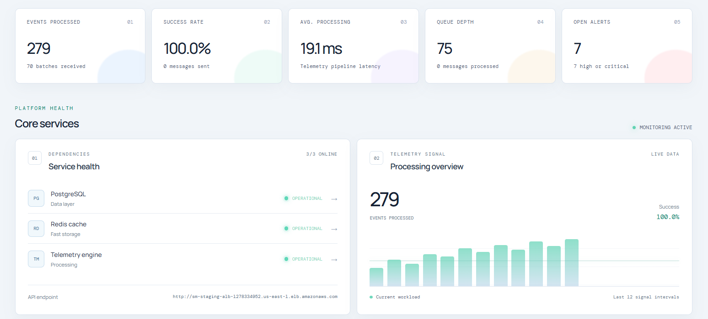
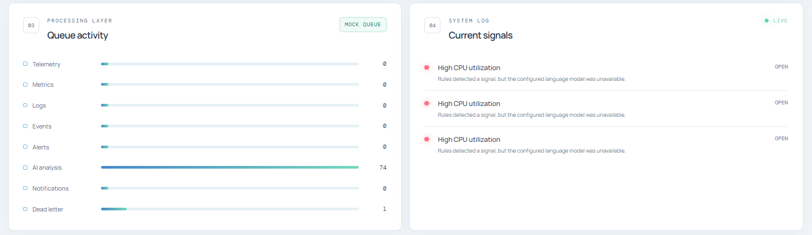
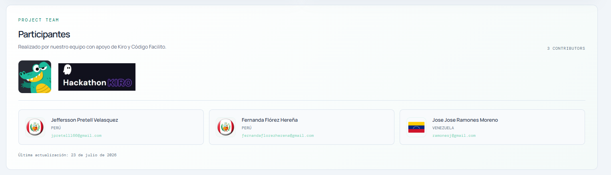
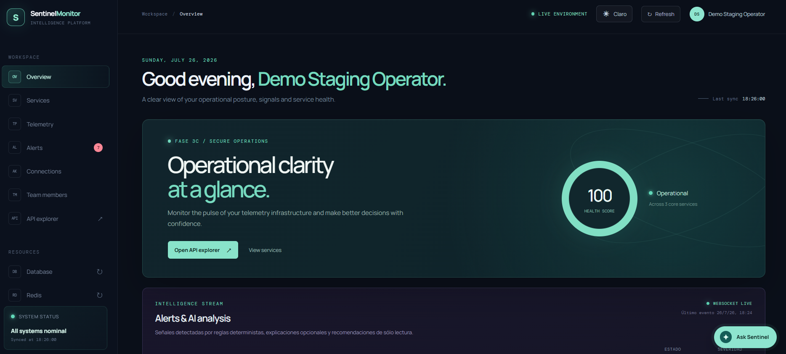